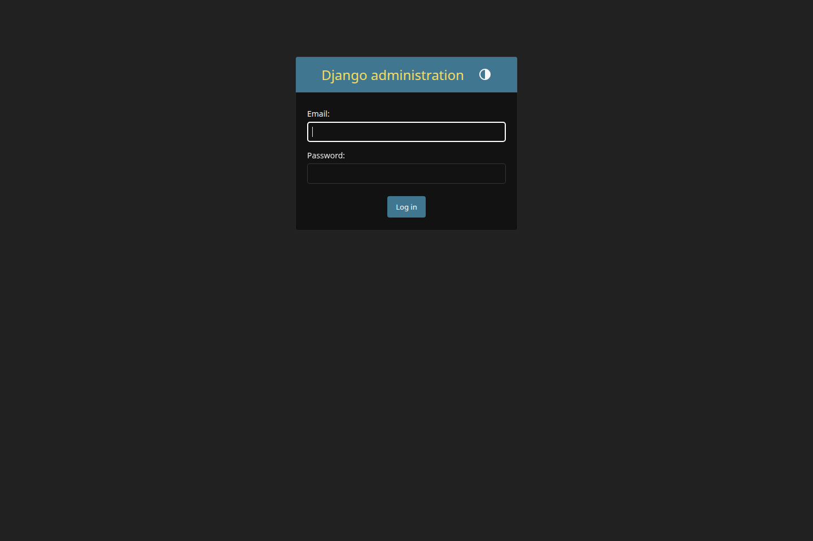

Implementation review and next-step presentation
10 slides max • high-level only
SecureWallet is a micro-payment wallet focused on strong authentication, auditability, tamper-evident transaction integrity, and local-first infrastructure. This presentation summarizes what has been implemented, where the platform stands today, and what should happen next.
Email and password are validated first, with generic error handling and lockout protection.
The backend decides whether the user must verify email, enroll MFA, or complete MFA.
Login bootstrap is handled through a single MFA verification contract, including first-time setup.
Session issuance, session listing, logout invalidation, PIN status, PIN checks, and password change are server-controlled.

Presentation artifact created from the current requirements and repository state, with screenshots generated from the running local backend and monitoring stack.